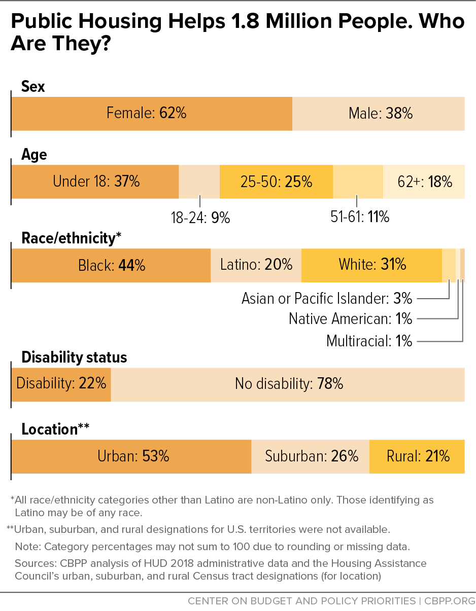

Federal rental assistance programs help people and families with low incomes afford good-quality, stable housing and make ends meet. Federal rental assistance provides vital support to over 10 million people in roughly 5 million households, primarily through three major programs — Housing Choice Vouchers, Section 8 Project-Based Rental Assistance, and Public Housing.[1] Research shows that rental assistance sharply cuts homelessness, housing instability, and overcrowding, and improves a range of other outcomes for participants. But it also could do more to help people live in the circumstances of their choosing, in a way that maximizes their health and well-being.
This analysis provides a window into how local patterns of economic and racial segregation shape where assisted people live across the 100 largest (most populous) metropolitan areas. It shows that these programs help people afford housing in a wide variety of neighborhoods across central cities and their suburbs, often where the standard of living is high. But more often, assisted households — like other renter households with similarly low incomes — are concentrated in neighborhoods with high poverty rates, under-resourced schools, and a shortage of basic services like grocery stores. This is especially true for place-based rental assistance, where rental subsidies are attached to particular properties.
To understand the location of assisted housing is to know that past and present racist policies are largely responsible for the prevalence of separate and unequal neighborhoods. Public and private practices such as stealing land from Indigenous people; racial covenants and redlining which actively enforced segregation by preventing people from purchasing homes in certain neighborhoodstypically those with based on race, ethnicity, and religion; and “urban renewal” programs that allowed governments to displace predominantly communities of color in the name of redevelopment and highway construction[2] have directly shaped who gets to live where in the U.S.
But these historical? practices are not the only culprits. Modern-day? forces — gentrification, zoning regulations, immigration and asylum policy, community members fighting local affordable housing developments, landlord discrimination — also play a major role in the inequities in the metropolitan landscape.
This analysis looks at the location of households who use the three largest federal rental assistance programs — which account for 84 percent of all households receiving such assistance — and compares them to the locations of all rental units and of rental units that are affordable to people using a housing voucher. We group households and rental units based on the neighborhood poverty rate, a proxy for the kind of schools, jobs, parks, and grocery stores the households will have access to. Some assistance programs are better than others at providing households with more neighborhood choice, allowing them to live in areas best suited to their needs.
Rental assistance programs alone cannot undo the decades of racist policies behind today’s unequal neighborhoods, but they could do far more than they do today. Public Housing, Project-Based Rental Assistance, Housing Choice Vouchers, and several rural-focused rental assistance programs administered by the U.S. Department of Agriculture, are funded annually through federal appropriations process. Just 1 in 4 households in need of rental assistance receives it due to inadequate funding. Many families wait years to receive assistance, if they’re lucky enough to get on a waitlist at all.[3]
Meanwhile, high housing costs, housing instability, and homelessness disproportionately affect people of color, who — due to systemic racism in the nation’s economic, education, and housing systems — are more likely to have lower incomes and rent their homes. Providing enough funding to help every person who needs housing assistance is the first step in reducing harm to those experiencing housing instability or homelessness.
Housing justice requires repair, from both current and past harm. The harm caused by racist housing policies reaches back generations. Because people of color, particularly those with lower incomes, have been denied freedom of choice in the housing market, housing policies and programs must at minimum create the conditions of free choice. Likewise, federal, state, and local policymakers should ensure that all people with low incomes can afford stable, good-quality housing, that they can freely decide to stay in their current neighborhood or move to another location of their choice — and that wherever they live, they have access to the community resources and amenities they need to thrive.
Needed steps include policies that eliminate landlord discrimination and ensure that people with low incomes can rent housing they can afford in every neighborhood. They also include policies that change cities themselves, until all neighborhoods provide opportunity and safety to everyone who lives there. Ultimately, making people whole will require a multifaceted set of solutions, from revitalizing neighborhoods to providing educational and economic opportunities to those historically denied them. This analysis offers a first step toward understanding what changes are needed to achieve this goal.
Each of the 100 metropolitan areas in this analysis has a unique story. But by highlighting a handful of metro areas, as this piece does, we can illustrate major trends across the country. Readers can also explore data for all metropolitan areas using our interactive mapping tool and the interactive tables in the [appendix or separate landing page tbd]. The data can be used to identify the people and communities whom racial and economic segregation have most affected. It is then up to federal, state, and local policymakers to develop solutions in collaboration with these communities, ensuring that their needs and voices are heard and reflected.
[link to separate interactive map page]
Main Findings From 100 Metro Analysis: Some Programs Provide Greater Housing Choice
Our main findings for the 100 most populous metropolitan areas are:
Over half of public housing developments are in high-poverty neighborhoods, often reflecting local patterns of economic and racial segregation. The Public Housing program is the nation’s oldest form of rental assistance. Prevailing housing policies at the time of its inception, like restrictive covenants and redlining, fostered separate and unequal neighborhoods based on race and class. During much of the period when the government constructed the bulk of public housing, it segregated most developments, with separate, more favorable developments for white than for Black residents. Many white residents eventually moved out of public housing and went on to purchase homes, while policies like redlining and lending discrimination denied Black residents the same opportunities. [added sentence TKTK?] Today, the majority of the 1.8 million people living in public housing are in neighborhoods with high rates of poverty. Just 12 percent of all occupied rental units in the 100 largest metros are in high-poverty areas. Over half of all public housing units are (see Figure X).
The situation is even more extreme for families with children: some 56 percent of families with children in public housing are in a high-poverty neighborhood. That is in part because discrimination has often made it especially difficult to build public and other affordable housing in lower-poverty areas if the housing would serve families with children. Resistance to developments serving this population is often motivated by racist stereotypes about low-income families with children, but other factors such as financial challenges to building larger units can also play a role. Today, little public housing is located in low-poverty areas: Only 1 in 10 households assisted by public housing in the 100 largest metros live in low-poverty neighborhoods. (See Figure X.)
Project-based rental assistance provides a critical source of rental assistance in a more diverse range of neighborhoods than public housing. Congress in 1974 established Section 8 Project-Based Rental Assistance (PBRA), under which private development owners sign rental assistance agreements with HUD. Nearly 30 percent of developments receiving this assistance are in high-poverty neighborhoods. (See Figure X.) However, roughly 1 in 5 households in the program live in low-poverty neighborhoods, meaning PBRA provides a greater range of neighborhood options than public housing. PBRA is especially critical for older adults with low incomes — who head over half of the 1.2 million households in the program — allowing them to age in place.[4]
Renters with a housing voucher are more likely to live in low-poverty areas, and less likely in high-poverty areas, than those with other rental assistance. Congress authorized the Housing Choice Voucher (HCV) program in 1974. Today it is the largest form of federal rental assistance, assisting roughly 5 million people. Unlike Public Housing or PBRA, most housing vouchers are tenant based, meaning the voucher is issued to an individual or family to use in the private rental market. Households using vouchers are more likely to rent in neighborhoods where the poverty rate is 10 percent or less, despite facing discrimination from many landlords that refuse to accept vouchers. Renters using a voucher are equally likely to be in a low- or high-poverty neighborhood: about 1 in 5 households using vouchers live in low-poverty neighborhoods, a notably larger share than public housing residents.
Renters with a tenant-based housing voucher are the most likely to live in low-poverty, and least likely in high-poverty, areas. Nearly 1 in 4 (23 percent) voucher holders with a tenant-based voucher live in low-poverty neighborhoods, the highest share among all the rental assistance programs in this analysis. Some critics of the voucher program have expressed concern that vouchers concentrate assisted renters in high poverty neighborhoods. However, in the 100 largest metros, people using tenant-based vouchers are no more likely to live in high-poverty neighborhoods than similar but likely unassisted renters. (See Figure X.) Because vouchers allow people to rent in the private market, it is not surprising that voucher holders would live in similar locations to their unassisted counterparts. Where voucher holders live is often a reflection of pre-existing patterns of economic and racial segregation in a metro area, which constrains housing choice for all extremely low-income renters. Just 21 percent of households with a tenant-based voucher live in high-poverty neighborhoods, compared to 20 percent of extremely low-income households (those below the poverty line or 30 percent of the local median income) who face severe rent cost burdens (pay more than half their income for housing).[5]
While most Housing Choice Vouchers are tenant based, meaning people can use them to rent any private apartment that meets program guidelines, project-based vouchers are attached to specific units. In 2000 Congress approved the redesign of project-based vouchers — an option available as part of the Housing Choice Voucher program that had been rarely used — to encourage new housing development and to increase public housing agencies’ use of vouchers in existing housing. Project-based vouchers are distributed very similarly to PBRA. Thirty percent of project-based vouchers are in high-poverty neighborhoods, while 18 percent are in low-poverty neighborhoods.
Over a third of all units affordable to renters using vouchers in the 100 largest metros are in low-poverty neighborhoods, but not all these units are available or accessible to voucher holders. Twenty-two percent of families using vouchers live in low-poverty neighborhoods, despite 36 percent of voucher-affordable units – units whose rents are low enough to be covered by the voucher subsidy – being located in low-poverty neighborhoods. (See Figure Y.) In some metros, low rental vacancy rates may partly explain this mismatch. Or, studio and one-bedroom units may be affordable with a voucher but too small for many families with children. But landlord discrimination also plays a role: in low-poverty neighborhoods, landlords are significantly more likely to refuse to rent to someone with a voucher.[6] Some states and localities have passed source of income protections as a way to prevent this discrimination, but they do not always enforce them, and there is no national law against the practice.
[H1 queuing up the 4 cities/programs]
Washington D.C.’s Public Housing Reflects Deeply Entrenched Racial Segregation
Established in 1937, the Public Housing program is the nation’s oldest form of rental assistance. Early projects were usually segregated on the basis of race, a practice that was not officially outlawed until the 1960s.[7] Today, most of the 1.8 million Americans living in over 950,000 households assisted by public housing are located in neighborhoods with high rates of poverty.[8] Most public housing developments are over 40 years old and in dire need of investment and repair. Public housing properties are operated by a network of about 2,700 state and local public housing agencies.

The Washington, D.C. metro area’s deeply entrenched racial segregation reflects the lasting impact of racist housing policies intentionally designed to separate and isolate white and Black residents.
Racially restrictive covenants, widely adopted in the city in the early 1900s, legally prohibited people of color from buying or occupying homes in many white communities. Restrictive covenants were enforceable by courts until 1948, confining Black residents to certain parts of the city and allowing policymakers to provide less resources and investment than to neighborhoods where only white residents could live.[9] Neighborhoods that used restrictive covenants reinforced racial segregation and depressed Black homeownership rates in those neighborhoods, with inequities persisting to this day.[10]
D.C.’s public housing complexes were also racially segregated, with separate developments built for white and Black residents.[11] By the time the developments were officially desegregated in the 1950s, much of the city had become highly segregated along intertwined lines of race and economic status, shaped by Jim Crow laws and New Deal-era federal housing policies. Created in the 1930s, the Home Owners’ Loan Corporation (HOLC) provided mortgages to homeowners, guided by maps it color-coded by perceived lending risk. HOLC largely relied on a neighborhood’s racial demographics to determine creditworthiness, deeming communities of color as “hazardous,” a practice known as “redlining” for the red marking these communities had in HOLC’s maps.
While HOLC’s redlining maps institutionalized the idea that proximity to people of color increases lending risk and decreases property values, the GI Bill and the Federal Housing Administration (FHA) cemented racially discriminatory lending practices in the decades that followed.[12] The GI Bill helped white veterans purchase homes by providing low-interest mortgages but excluded Black veterans from receiving the same benefits. The FHA adopted a discriminatory rating system similar to HOLC that systematically excluded communities of color from the same homeownership opportunities afforded to white communities. The FHA insured home loans almost exclusively in white communities, helping spur an exodus of white residents to D.C.’s surrounding suburbs.[13]
Between 1950 and 1970, over half (60 percent) of the white residents moved out of the city of D.C.[14] These changes were also reflected in the district’s public housing: Black residents became the overwhelming majority of public housing residents, which remains the case today. Black people now make up 24 percent of the D.C. metro area’s overall population, but 92 percent of households living in its public housing are headed by a Black person.[15] Nationally, Black people make up 12 percent of the overall population, while 42 percent of all households living in public housing are headed by a Black person.[16]
A Third of Black Families With Children in D.C. Public Housing Live in High-Poverty Areas
Today, most Black residents in the D.C. metro area live in low-poverty neighborhoods. However, Black D.C. renters are impacted by past racist housing policies leading to higher rates of housing insecurity and significant overrepresentation in high-poverty neighborhoods. Households headed by a Black person make up two-thirds (67 percent) of all renter households in high-poverty neighborhoods in the metro area, compared to 13 percent of households headed by a white person and households headed by a Latine person.[17] White people make up 42 percent of the D.C. metro area’s overall population, and Latine people make up 17 percent of the overall population.
Much of the D.C. area’s public housing stock — and therefore many of its assisted families — is confined in areas of concentrated poverty. For example, only 2 percent of people in the metro area live in high-poverty neighborhoods yet a third (33 percent) of Black families with children assisted by public housing do. Living in high-poverty neighborhoods can worsen access to jobs, commuting costs, and access to fresh and reasonably priced food and other basic goods and services.
However, the problem isn’t with the public housing program itself. Housing agencies could create housing options in lower-poverty neighborhoods and state and local policymakers could invest resources to improve neighborhoods so that living in a high-poverty neighborhood doesn’t mean poor schools, lack of resources, and other hardships. And indeed public policies should strike at the heart of poverty itself.
Public housing does good for families and individuals with low incomes, helping prevent displacement as housing costs rise and enabling them to continue living in the D.C. metro area as affordable housing options dwindle in the private market. Many public housing residents also develop a sense of community with other residents, building important social ties they rely on for support and safety.[18] These connections can also be foundational in tenant organizing efforts, so residents can hold housing agencies accountable and leverage their lived expertise to improve living conditions.[19]
D.C. Public Housing Concentrates Residents in High-Poverty Areas Far More Than Other Programs
Families and individuals in the D.C. metro area living in public housing are much more concentrated in higher-poverty neighborhoods relative to other rental assistance programs. Some 28 percent of households assisted by public housing live in high-poverty neighborhoods, compared to 13 percent of PBRA-assisted households and 9 percent of voucher-assisted households. (See Figure X.) Public housing residents are also less likely to live in low-poverty neighborhoods relative to PBRA-assisted households and voucher-assisted households in the DC metro area.
Most metro areas show a similar concentration of public housing units in high-poverty areas. Public housing residents in two-thirds of the 100 most populous metros are more likely to live in high-poverty neighborhoods compared to voucher and PBRA-assisted households.
While it can be difficult for renters with a housing voucher to find a landlord to rent to them, a much higher share are able to rent units in moderate and low-poverty neighborhoods of their choosing. Because public housing is so concentrated in the DC metro area, residents who rely on it do not have the same choice about where they get to live. This is especially significant given the long history of housing policies that have limited where Black and other people of color can live. Given that over 90 percent of households living in D.C.’s public housing are headed by a Black person, this is deeply unjust.
Public Housing is a Key Source of Affordable Housing, but D.C.’s Is Marred by Poor Conditions, High Vacancy Rates
Despite its shortcomings, public housing remains a critical source of permanently affordable housing, particularly in the Northeast and Puerto Rico. But insufficient funding creates long wait times to secure a unit; a group of residents admitted to D.C. Housing Authority (DCHA) public housing in 2022 spent an average of nearly 16 years on the waiting list before receiving assistance.[20] Nationally, public housing residents waited an average of 20 months before receiving assistance in 2023.[21]
Demand for public housing far outstrips supply: DCHA’s public housing assists roughly 5,350 households,[22] yet over 24,000 households are still on DCHA’s waiting list for public housing as of 2023.[23]
Despite high demand, DCHA has the lowest public housing occupancy rate of any large housing agency, a recent HUD report found, with over 1 in 5 units currently vacant.[24] (See Figure X.) Units may sit unused due to poor conditions stemming from insufficient funding for repairs and renovation. Coupled with poor management, many of these vacant units are left dilapidated due to neglect, in some cases posing significant health and safety hazards.
During its inspection of vacant public housing units, HUD found multiple units with mold and moss growing on the walls and floors from active leaks. In 2019, DCHA reported that the vast majority of its units need significant capital improvements, such as new heating and cooling systems, roofs, and plumbing, requiring an estimated $2.2 billion to address.[25]
The Section 8 Project-Based Rental Assistance Program (PBRA) was established in 1974. Project-based assistance means the rental subsidy is tied to a unit in a building. The tenant will receive assistance as long as they occupy the unit. It is administered by private owners who enter into rental assistance agreements with HUD. Most owners are for-profit entities, but nonprofits and some public housing agencies own a significant share of Section 8 PBRA properties. By the mid-1980s, the program faced criticism for rising costs and concentrating assisted families in neighborhoods with high poverty rates.[26] Although Congress stopped funding new PBRA contracts in 1983, the program still helps house roughly 2 million people in 1.2 million households.[27]
The Section 8 Project-Based Rental Assistance Program (PBRA) was established in 1974. Project-based assistance means the rental subsidy is tied to a unit in a building. The tenant will receive assistance as long as they occupy the unit. It is administered by private owners who enter into rental assistance agreements with HUD. Most owners are for-profit entities, but nonprofits and some public housing agencies own a significant share of Section 8 PBRA properties. By the mid-1980s, the program faced criticism for rising costs and concentrating assisted families in neighborhoods with high poverty rates.[26] Although Congress stopped funding new PBRA contracts in 1983, the program still helps house roughly 2 million people in 1.2 million households.[27]
Los Angeles is home to the largest Latine population of any metro area in the U.S.; it has the second largest Asian population and fourth largest Native Hawaiian and Pacific Islander (NHPI) population. It also has one of the highest rental cost burden rates of any metro area: 56 percent of renter households spend more than 30 percent of their income on rent each month (that is, they’re cost burdened), and nearly a third (31 percent) pay more than half their income on rent (severely cost burdened).[28] California has long dealt with an acute housing affordability and homelessness crisis, driven by a deep shortage of housing affordable to renters with the lowest incomes.
For every 100 renter households in the Los Angeles metro area with extremely low incomes,[29] there are only 21 affordable and available rental units.[30] This makes housing insecurity all but inevitable for renters with the lowest incomes who do not receive rental assistance. Even California’s higher state minimum wage, $16 an hour, is not enough to cover the high cost of housing. A full-time employee being paid minimum wage would have to work 96 hours each week just to afford a modest one-bedroom rental unit in California.[31]
Such severe housing affordability issues make PBRA a crucial source of affordable housing for over 39,000 families with low incomes living in the Los Angeles metro area. Asian and NHPI renters are most likely to be assisted by PBRA compared to other racial and ethnic groups in the area. Asian and NHPI people make up 17 percent of the metro area’s overall population, but 32 percent of PBRA-assisted households are headed by an Asian or NHPI person, a significantly higher share than voucher-assisted households and public housing residents.[32]
This is partly driven by PBRA-funded properties located in neighborhoods where Asian and NHPI renters make up the overwhelming majority of residents. These neighborhoods also tend to have high rates of poverty: one-fourth of PBRA-assisted households headed by an Asian or NHPI person live in high-poverty neighborhoods, slightly higher than the one-fifth of all PBRA-assisted families in the metro area who do.
Over half (53 percent) of renter households headed by an Asian person in the Los Angeles metro area are cost burdened, and nearly 1 in 3 (30 percent) are severely cost burdened.[33] Despite many Asian renters facing high housing costs, Asian renters are still less likely to be burdened by housing costs than Black and Latine renters both nationally and in the Los Angeles area. However, Asian and NHPI renters with low incomes are more likely to live in overcrowded housing. Among renters with low incomes living in cost-burdened households, Asian and NHPI renters are more likely to live with extended family in doubled-up and overcrowded households than most racial and ethnic groups.[34]
Asian and Native Hawaiian and Pacific Islander renters often face distinct housing challenges that aren’t always captured when the two groups are combined, which typically happens for statistical purposes. For instance, while Asian people experience the lowest rate of homelessness, NHPI people have the highest homelessness rate of any racial or ethnic group.[35] This partly reflects the intergenerational impact of settler colonialism and displacement on NHPI communities in Hawai’i and U.S. Territories in the Pacific and the high share of NHPI residents living in expensive housing markets.[36] This has shaped their unique experiences of homelessness and housing insecurity, which are distinct from those of Indigenous people in the contiguous United States.[37] A higher share of NHPI people have incomes below the poverty line, and NHPI renters are more likely to be burdened by housing costs and live in an overcrowded household compared to Asian renters.[38]
PBRA, Which Helps Many Older Angelenos, Can Provide Critical Supportive Housing Services
Older adults make up the overwhelming majority of those assisted by PBRA in the Los Angeles metro area: over 3 in 4 (77 percent) PBRA-assisted households are headed by a person aged 62 and older, a much higher share than voucher-assisted households and public housing residents.[39] (See Figure X.) While this aligns with national demographics of PBRA-assisted households, it’s a significantly higher share than the roughly half (53 percent) of PBRA-assisted households headed by older adults overall.[40]
This partly reflects properties providing housing to older adults through the Housing for the Elderly program (also known as Section 202) that are subsidized through the PBRA program.[41] Section 202 housing typically includes service coordinators who help connect residents with other community services that support independent living, including physical and behavioral health services for those who want and need them. PBRA is a critical funding source for affordable housing for older adults, helping provide financing to preserve existing properties.
Rental assistance helps communities create a variety of integrated housing options for older adults — including supportive housing — so that people can choose the housing that meets their needs without being isolated from the rest of the community. This includes scattered-site supportive housing, including for households with tenant-based vouchers, and project-based supportive housing that houses a mix of people who do and don’t need supportive services. This can help older adults who want to age in place live in their own homes, instead of congregate care settings such as nursing homes or psychiatric facilities.[42]
Older adults and non-elderly people with disabilities are much more likely to receive federal rental assistance than other people in need of assistance, but there are still many people in these groups who face serious hardship because they can’t afford housing.[43] A recent representative study of adults experiencing homelessness in California found that 44 percent of unhoused adults were 50 and older.[44] Many older adults are no longer able to work and rely on fixed incomes provided by Supplemental Security Income (SSI) that are often too low to cover housing costs.[45]
In 2023, over 4,700 people experiencing homelessness in the Los Angeles City and County Continuum of Care (CoC) were 65 and older, and nearly three-fourths (74 percent) of them were experiencing unsheltered homelessness.[46] Living in a car, on the street, or other places not meant for human habitation can exacerbate risk of chronic disease and serious mental illness, lower access to health services, and increase food insecurity for older adults.[47]
PBRA Helps House Thousands of Disabled Angelenos
In the Los Angeles metro area, PBRA assists roughly 6,500 households that include a person with a disability. Some 14 percent of those households live in high-poverty neighborhoods. Rental assistance can help disabled people keep a roof over their heads, especially those whose only source of income is SSI. In California, SSI provides a basic monthly benefit of $1,163 in 2024 — too little to pay for a typical one-bedroom apartment even if every dollar of SSI benefits were used for rent.[48]
While some disabled people with low incomes may require supportive housing, rental assistance and short-term support in navigating the rental market are likely enough for most adults with disabilities to gain long-term housing stability.[49] However, as is the case with rental assistance programs more broadly, funding limitations leave many low-income, disabled renters without the assistance they need to stay stably housed.
Renters with disabilities and low incomes also face unique barriers to housing affordability and accessibility. Finding a unit that accommodates their safety and usability needs can be challenging due to the dearth of accessible homes. Even when a home is accessible, people with disabilities often face landlord discrimination: discrimination based on disability accounted for over half of fair housing complaints filed nationally in 2022.[50] People with disabilities are also often excluded from employment and education opportunities, and they can face higher cost of living due to steep medical bills, transportation, and expensive home accessibility modifications.[51]
As a result, disabled people are more likely to live below the federal poverty line, live in poor quality housing, and experience homelessness compared to people without disabilities, posing additional challenges to housing security.[52] Lack of sufficient income or rental assistance to stay stably housed can force disabled people into congregate or institutional settings that undermine their independence. Expanding access to inclusive and affordable housing means people with disabilities can live in neighborhoods that best meet their needs, such as near key community resources, services, or social supports that reduce isolation and barriers to community living.
More Can Be Done to Support Use of Housing Choice Vouchers in More Milwaukee Neighborhoods
Introduction
Congress authorized the Housing Choice Voucher (HCV) program in 1974. Today it is the largest form of federal rental assistance, assisting roughly 5 million people in 2.3 million households.[53] Housing vouchers are tenant-based assistance, meaning the voucher is issued to an individual or family to use in the private rental market. A voucher recipient must find a unit that meets the program’s quality standards and has a landlord willing to participate.
A family with a voucher generally must contribute the higher of 30 percent of their income or a “minimum rent” of up to $50 for rent and utilities. The voucher covers the rest of those costs, up to a limit (called a payment standard) that the housing agency sets based on HUD’s fair market rent estimates. If a family moves, they can take their voucher with them, provided the new unit is eligible and the landlord is willing to participate in the program. The HCV program is administered by a network of nearly 2,200 state and local public housing agencies.[54]
[need chart here]
Milwaukee Highly Segregated by Race and Income Level
The Milwaukee metro area is home to nearly 1.6 million people, 64 percent of whom are white, 16 percent are Black, 12 percent are Latine, and 4 percent are Asian. Milwaukee is one of the most racially segregated metro areas in the country, reflecting the past and present impact of racist and exclusionary housing policies.[55]
As in the rest of the country, starting in the early 1900s policies like redlining and restrictive covenants excluded people of color from homeownership opportunities and barred them from living in more affluent, predominantly white neighborhoods. By the 1940s, nearly all of the Milwaukee suburbs used restrictive covenants to exclude Black people from owning or occupying homes.[56] Families of color had far less choice about where they could live and were largely relegated to areas of Milwaukee that did not receive the same resources and investment afforded to white communities.[57]
The impacts on Milwaukee residents last to this day. Residents of historically redlined neighborhoods in Milwaukee County (which includes the city of Milwaukee) are more likely to be in poverty and identify as Black or Latine.[58] They also continue to experience lending discrimination, marked by unfair loan denials and, for those who receive loans, lower lending rates and higher costs.[59]
The intersecting impact of racial and economic segregation has produced staggering racial inequities in concentrated poverty and access to lower-poverty neighborhoods. Black people make up 16 percent of residents in the Milwaukee metro area but over half (53 percent) of people living in high-poverty neighborhoods and only 3 percent of those living in low-poverty neighborhoods. Latine people, who make up 12 percent of the Milwaukee metro’s population, make up 23 percent of residents in high-poverty neighborhoods and only 6 percent of residents in low-poverty neighborhoods.
Black Milwaukee families are also more likely to face housing insecurity compared to other racial and ethnic groups: over half (53 percent) of renter households headed by a Black person are cost burdened in the Milwaukee metro area compared to 44 percent of renter households headed by a white or Latine person.[60] Black renters are more likely to receive rental assistance due to higher need stemming from the past and present impact of systemic racism.[61] Over two-thirds (69 percent) of voucher-assisted households in the Milwaukee metro area are headed by a Black person, reflecting this outsized need.[62]
Landlord Discrimination Often a Source of Voucher Underuse in Low-Poverty Neighborhoods
There are roughly 9,400 households using a housing voucher in the Milwaukee metro area. These families and individuals should be able to use their vouchers in the neighborhood of their choice. For example, they are substantially more likely to live in lower-poverty neighborhoods than residents of public housing or Project-Based Rental Assistance. But voucher holders’ housing options are significantly influenced by landlords’ willingness to accept housing vouchers.
In Milwaukee and nationwide, the share of voucher-affordable units — units whose rents are low enough to be covered by the voucher subsidy — in lower-poverty neighborhoods is significantly higher than the share of voucher-assisted households. Over a third (34 percent) of voucher-affordable units are in low-poverty Milwaukee neighborhoods, double the share of voucher-assisted families living in low-poverty neighborhoods.
Due to data limitations, we cannot identify which voucher-affordable units are vacant or their bedroom size. Voucher holders may be concentrated in higher-poverty areas because of a mismatch in the types of units available (since studio and one-bedroom units may be affordable with a voucher but too small for many families with children). Nonetheless, landlord discrimination is a key reason why so few voucher recipients use their vouchers in low-poverty neighborhoods.
Landlords are significantly more likely to refuse to rent to someone with a voucher in low-poverty neighborhoods, which can limit housing options for voucher-assisted families in these neighborhoods.[63] Landlords may view required unit inspections as burdensome and not worth the additional time and effort, especially in neighborhoods where there is competition for units, making it easier to opt for unassisted tenants.
Some landlords stop accepting vouchers after negative experiences with inspections or because they did not feel adequately supported by the housing agency when a conflict arose with tenants.[64] Improving administration of inspections, creating funding for landlords to make minor repairs or accommodations to units, and providing stronger outreach to landlords can help address these types of concerns.
But in some cases, landlords deny vouchers for more outright discriminatory reasons. That includes falsely believing that voucher-assisted families will not be good tenants or using voucher holder status as a proxy to discriminate against people based on race (since in many places most voucher holders are people of color). Source of income protections are designed to prevent discrimination against voucher-assisted families, but these laws are specific to states or localities and are sometimes poorly enforced.
Milwaukee County enacted such protections in 2018, but the law has not prevented landlords from rejecting vouchers, with some still explicitly saying that they do not accept vouchers in published apartment listings. A recent investigation found many voucher-assisted families were completely unaware of the protections, and five years after their enactment, there has not been a verified complaint of voucher discrimination.[65]
Voucher Time Limits, Lack of Search Assistance Constrain Use
Families who use vouchers in the Milwaukee metro area are notably more likely to rent in higher-poverty neighborhoods. Nearly a third (32 percent) of voucher-assisted families in the area live in high-poverty neighborhoods while only 17 percent live in low-poverty neighborhoods. This trend is even more pronounced for project-based vouchers: almost half (49 percent) of families using project-based vouchers live in high-poverty neighborhoods, compared to 28 percent of households using tenant-based vouchers.
When an individual or family is issued a voucher, they may have as little as 60 days to find a unit and landlord that will take the voucher, although housing agencies are free to set longer limits and provide extensions if needed. If a voucher holder does not succeed within the allowed time frame, they have to return the voucher to the housing agency. Because many families wait months or even years before receiving a voucher, they are under intense pressure to find housing within the time limit. Some families do not even look for units in low-poverty neighborhoods because they fear, often rightly, that landlords will turn them down.[66]
The risk of not finding a unit and losing a voucher is more serious for some families and can vary widely depending on the housing agency. That is in part because some agencies are better at providing search assistance to participants or avoiding inspection delays and other administrative problems that can play a major role in discouraging landlords from accepting vouchers. Less than half (44 percent) of families assisted by the Milwaukee City housing agency were able to use their voucher in 2019, compared to 95 percent of families assisted by the Milwaukee County housing agency.[67] In communities where the housing agency doesn’t provide much help finding a unit, voucher-assisted families often rely on online listings specifically focused on voucher-friendly properties that are often concentrated in higher-poverty neighborhoods.
Aiding voucher-assisted families with intensive search assistance and covering expenses like security deposits and screening fees significantly increases voucher use in low-poverty neighborhoods.[68] This suggests that more families would like to use their voucher in a low-poverty neighborhood, but most housing agencies do not offer the services and supports needed to help families act on those preferences. Using vouchers to move to lower-poverty neighborhoods can improve the mental and physical well-being of adults as well as long-term earnings and educational outcomes for children.[69]
Some families may wish to use their vouchers in communities that happen to have higher poverty rates, because, for example, they can be close to friends and family in their social support network. Or, they might have access to public transportation, which is often lacking in further flung suburbs, or have a more manageable commute to work.
Previous experiences with racism can also deter voucher-assisted families of color from searching or moving to a predominantly affluent and white community, as they may rightly anticipate that the community will be unwelcoming.[70] This underscores the need for reparative policies that address historic disinvestment and reduce poverty that helps all families in all communities.
Beyond discrimination from landlords that do not wish to participate in the voucher program, voucher-assisted families and individuals of color can face additional landlord discrimination because of their race or ethnicity. The compounding effect of both voucher and racial discrimination may explain why so few families and individuals of color can use their vouchers in low-poverty neighborhoods. In the Milwaukee metro, only 7 percent of Black households and 16 percent of Latine households with a voucher live in low-poverty neighborhoods, compared to 46 percent of white Milwaukee households. (See Figure X.)
Severe racial inequities partly reflect the racial discrimination Black and Latine people continue to face in the rental market.[71] During housing searches, landlords and realtors often steer people of color toward higher-poverty, racially segregated neighborhoods, reproducing patterns of racial and economic segregation.[72] Voucher recipients may not even realize their housing choices are being constrained because they do not know that the landlord is not showing them all available properties.
Voucher-assisted families with children may also face additional housing discrimination from landlords, receiving differential treatment due to anticipated issues children may cause, such as overcrowding and more wear and tear on units.[73] One study found that while families with children are as likely as those without children to obtain an appointment for an available rental unit, they are shown fewer units and are told about slightly larger units that were more expensive to rent.[74] Discrimination can also have intersecting impacts across race, ethnicity, gender, and presence of children. For example, limited evidence suggests Black and Latina women are penalized during housing searches for being parents and for being single mothers, while white women are not.[75]
Policy Recommendations
Federal, state, and local policymakers should seek to ensure that all people with low incomes can afford stable, good-quality housing, that they can freely decide to stay in their current neighborhood or move to another location of their choice, and that wherever they live they have access to the community resources and amenities they need to thrive. Were far short of those goals today, but there are many steps that policymakers could take to advance us closer to them.
Expand rental assistance toward the goal of making it available to everyone who needs it
The most important way to ensure that people have access to decent, stable, affordable housing is to expand rental assistance and ultimately make it available to every low-income person who needs it. Rental assistance is highly effective at reducing homelessness, overcrowding, and housing instability, but only reaches one in four eligible households due to funding limitations. Policymakers should also take other steps to make housing more affordable, such as increasing subsidies for affordable housing development, reforming zoning rules to allow more subsidized and market-rate housing to be built, and instituting well-designed rent regulations where appropriate. But these measures generally wont make housing affordable to households with incomes around or below the poverty line unless the households also have rental assistance, so expanding rental assistance should be the single highest priority.[78]
Improve rental assistance to make it more responsive to the needs and choices of participants
Other actions will be needed to give people greater choice about where they live. One important approach is to make it easier for people to use tenant-based rental assistance in a wide range of neighborhoods.[79] Policymakers should fund housing navigators and other search assistance[80] and ensure that voucher holders have adequate time to look for housing before their vouchers expire. Other key changes would make it easier for families with vouchers to compete with higher-income applicants for available units, including by allowing voucher subsidies to be used for security deposits, ensuring that vouchers subsidies cover typical rents even in higher-cost neighborhoods by extending use of zip code-level Small Area Fair Market Rents,[81] and streamlining inspection requirements to avoid unnecessary delays.
Along with these adjustments to the existing voucher program, it would be valuable to test a more fundamental change: provision of rental assistance directly to tenants rather than through owners. Direct rental assistance could reduce administrative burdens for families, agencies, and owners, and potentially broaden choice for participants. HUD called for local pilots to test direct rental assistance in a September 2023 statement that has already prompted emerging efforts around the country, and a federally funded demonstration could evaluate the approach on a large enough scale to determine whether it should be adopted more broadly.[82]